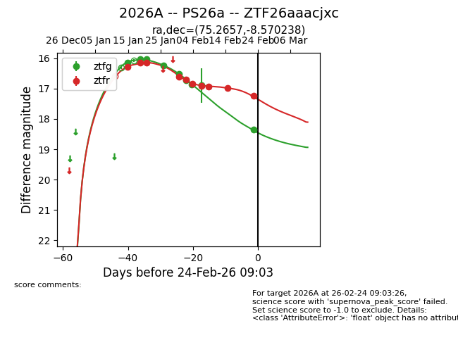
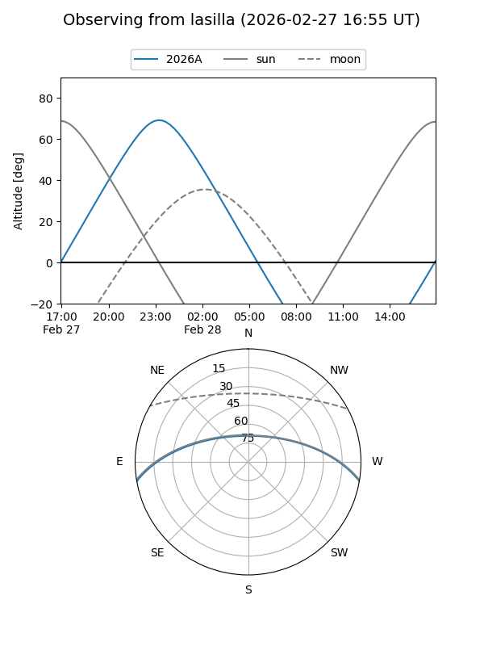
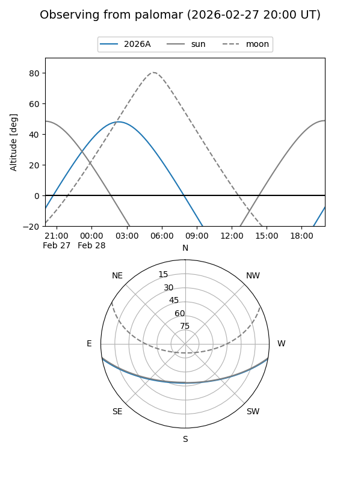
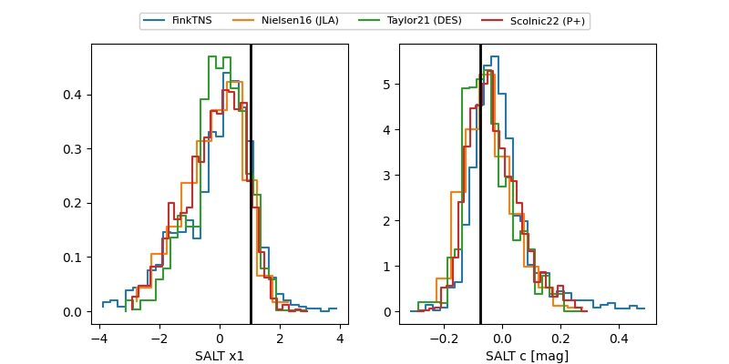

2026A
Target 2026A at 2026-01-19 05:15
Aliases and brokers:
FINK: link
Lasair: link
ALeRCE: link
TNS: link
YSE: link
alt names
ZTF26aaacjxc (ztf,fink_ztf)
2026A (tns,yse)
PS26a (panstarrs)
Coordinates:
equatorial (ra, dec) = 75.2657,-8.57024
equatorial (HMS+DMS) = 05:01:03.77,-08:34:12.86
galactic (l, b) = (207.9608,-28.39782)
Flags:
Photometry:
last ztfg=16.15, ztfr=16.15
1 ztfg, 2 ztfr detections
Lightcurve

Visibility


Additional plots
